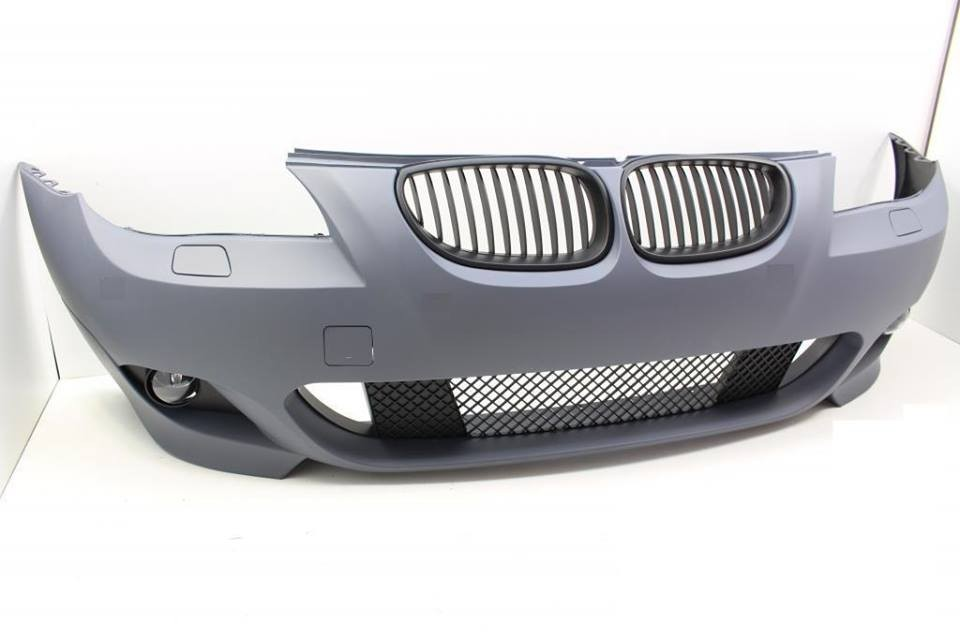
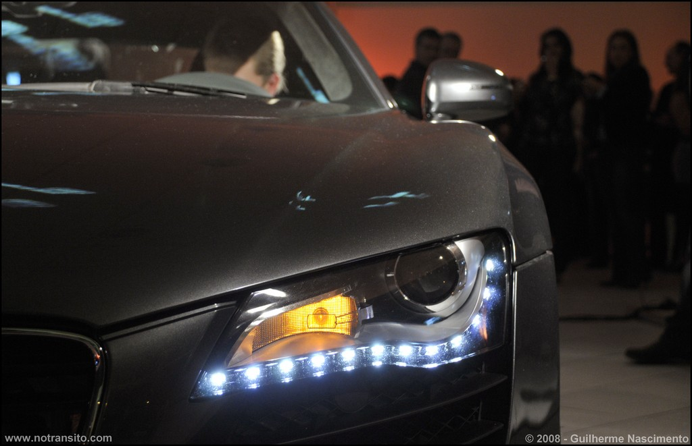
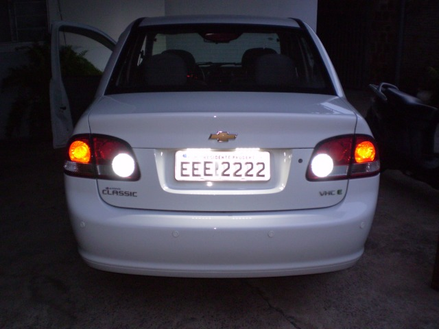
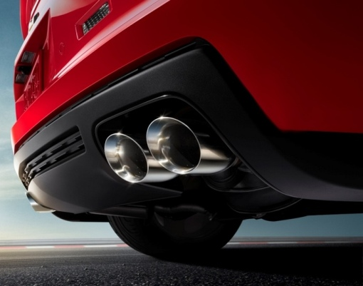

Clique sobre as áreas em vermelho

Os para-choques estão localizados na parte frontal e traseira do carro. Como o próprio nome do componente é intuitivo, então não há muito o que falar dele, sua função é absorver choques proveniente de batidas ou qualquer tipo de contato direto com o carro, amenizando os danos sofridos pelos componentes mais internos do carro.
São os principais responsáveis pela iluminação do seu carro. Esses farois servem para iluminar a pista a sua frente, porém tome muito cuidado ao utilizá-lo, pois pode cegar o condutor de um veículo que vier pelo sentido contrário.
As luzes de ré são aquelas brancas que acendem na parte traseira do carro. As luzes de freio são as vermelhas na parte traseira que ficam mais fortes quando está com o freio ativo. As luzes de direção são também chamadas de pisca, e indicam a direção em que você vai entrar num cruzamento, por exemplo. Os piscas também servem como pisca-alerta, para avisar os condutores de que o aquele carro está parado.
O sistema de escapamento serve para canalizar, resfriar e eliminar os gases produzidos durante a combustão. Esse sistema é composto pelos seguintes componentes:
Catalisador: É ele quem transforma os gases nocivos em elementos não contaminantes.
Tubo intermediário: Tem a função de esfriar os gases.
Silencioso: Serve para reduzir o nível sonoro do processo de queima de combustível.
O aerofólio serve para o veículo ter uma melhor aerodinâmica, mais poteência e ter mais estabilidade em curvas.
Quando o carro atinge uma alta velocidade, o vento que passa pelo acessório faz uma pressão sobre o carro jogando ele para baixo. Com o veículo mais próximo do chão – baixando inclusive o centro de gravidade – se ganha estabilidade e dirigibilidade.